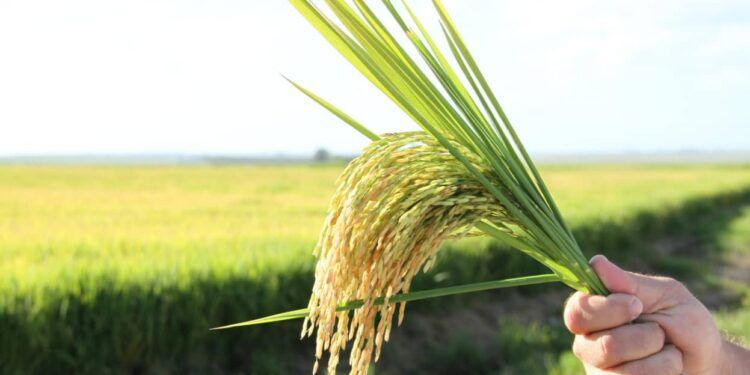

Arroz (Sequeiro)



Primavera
22/09 - 21/12
Verão
21/12 - 20/03
Outono
20/03 - 21/06
Inverno
21/06 - 22/09Pós-Colheita e Preparação para o Próximo Ciclo
Preparação, Plantio e Crescimento
Crescimento, Floração, Enchimento dos Grãos
Maturação e Colheita
SEMANAS
0
1
2
3
4
5
6
7
8
9
10
11
12
13
14
15
16
17
18
19
Preparo do solo: aração, gradagem e correção da acidez.
Aplicar calcário para corrigir o pH do solo, se indicado pela análise.